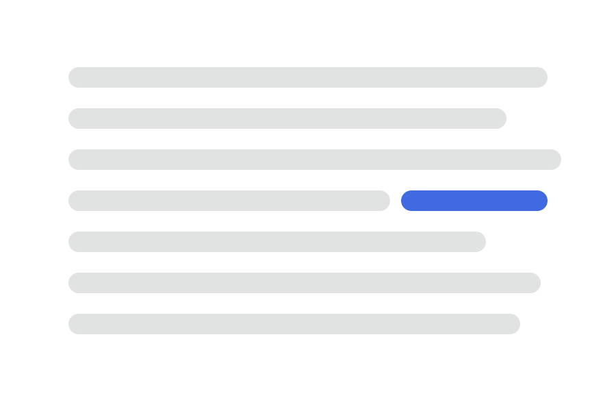
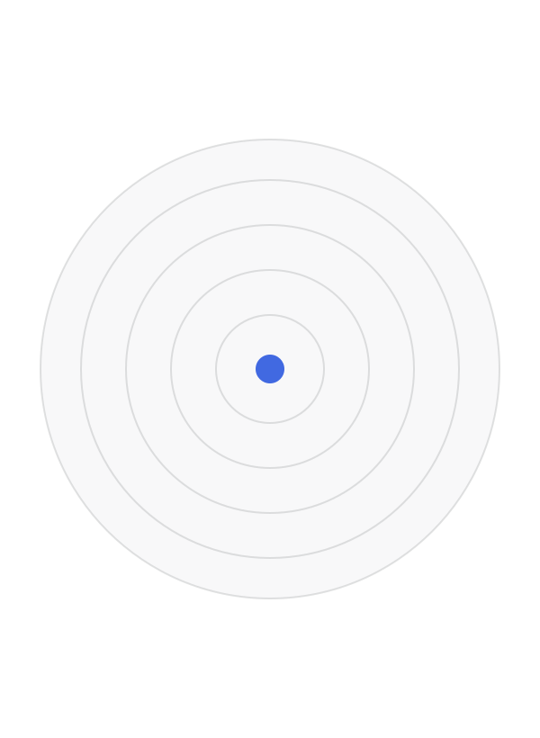
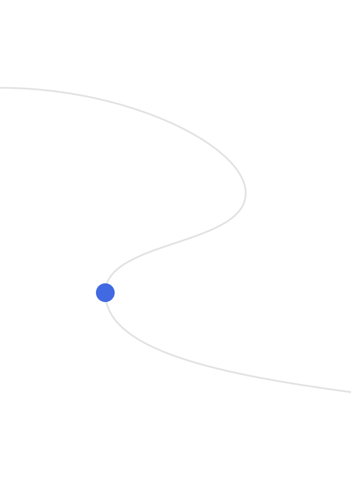
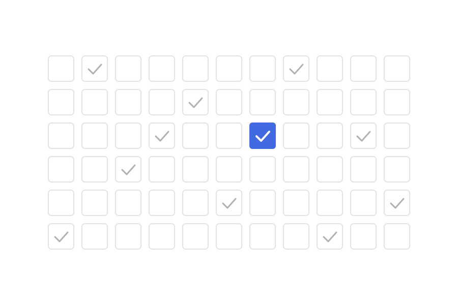

Municipales · Vallenoire
Le quotidien d’une ville qui nous facilite la vie.
Camille Ferrand conduit une liste citoyenne, sans étiquette. Son projet : alléger vos factures, apaiser la ville et simplifier vos trajets, avec des mesures datées que chacun pourra vérifier.

L’essentiel
Trois changements concrets pour votre quotidien
-
Moins de dépenses
Le taux communal de taxe foncière gelé, la cantine au quotient familial et un achat groupé d’énergie ouvert à tous.
Le pouvoir d’achat en 8 mesures -
Plus de tranquillité
Des agents à pied le soir et le week-end, des médiateurs de rue et un éclairage refait dans les rues sombres.
La tranquillité en 6 mesures -
Des trajets plus simples
Des rues fermées aux voitures devant les écoles, des pistes cyclables continues et un transport à la demande pour les aînés.
La mobilité en 7 mesures
La démarche
Des mesures que chacun pourra vérifier
Camille Ferrand connaît Vallenoire rue par rue. Plutôt que de grands discours, elle propose des mesures chiffrées et datées, vérifiables par tous à la fin du mandat.
Comment vérifier :
- le budget publié chaque année, en une page ;
- un bilan public à mi-mandat, mesure par mesure ;
- une permanence par mois dans chacun des 6 quartiers.
Le projet en 4 piliers
Ce qui change pour vous
Deux priorités, deux engagements de fond, 24 mesures concrètes.
-

Priorité 1
Pouvoir d’achat
- Taux communal de taxe foncière gelé pendant tout le mandat
- Cantine et périscolaire au quotient familial
- Mutuelle communale et achat groupé d’énergie
-

Priorité 2
Tranquillité
- Police municipale de proximité, à pied
- Médiateurs de rue et un référent par quartier
- Un problème signalé, une réponse sous 7 jours
-

Engagement de fond
Mobilité du quotidien
- Rues aux écoles aux heures d’entrée et de sortie
- Plan vélo continu et aide à l’achat selon les revenus
- Transport à la demande pour les aînés
-

Engagement de fond
Une mairie qui rend des comptes
- Budget publié chaque année en une page
- Bilan public à mi-mandat
- Cours d’école et rues les plus chaudes végétalisées
Besoin d’une version plus accessible ? Lire le programme en facile à lire et à comprendre.
Ce qui guide Camille
Trois valeurs
Protéger
Le budget des familles et la tranquillité de chaque rue.
Écouter
Une permanence par mois dans chacun des 6 quartiers.
Rassembler
Une liste citoyenne, au-delà des étiquettes.
Agir
Une campagne, 3 façons d’agir
-
Je m’engage
2 heures par semaine suffisent : porte à porte, stand du marché, distribution de documents.
Devenir bénévole -
Je donne mon avis
Une question, une idée, un désaccord : l’équipe répond sous 48 heures, à chaque message.
Écrire à l’équipe -
Je vote
Vérifiez votre inscription et, si vous êtes absent le jour du vote, faites une procuration.
Préparer mon vote

La parole de Camille
Chaque euro compte dans une famille. La mairie doit alléger tout ce qui dépend d’elle, à commencer par la cantine et la taxe foncière.
47 ans, géomètre de formation, elle organise depuis 12 ans le transport scolaire et à la demande de l’agglomération. Elle vit aux Quais depuis 2009. Lire sa biographie
+16,7 %Hausse des prix de l’énergie sur un an, en août 2026. Source : Insee, Informations rapides n° 218 (nouvel onglet).
Nos engagements
Juste Vallenoire, ensemble.
- Pas de promesses en l’air
Chaque mesure indique qui en profite, avec quel levier et pour quand.
- Pas de discours partisan
Une liste citoyenne, sans parti ni leader national derrière elle.
- Pas de solution toute faite
Les priorités se décident avec les habitants, quartier par quartier.
Agenda
Rencontrer Camille près de chez vous
- Chaque samedi de 9 h à 12 h, stand de campagne au marché sous les arcades.
2 heures par semaine suffisent pour changer votre quartier.
Aucune expérience n’est demandée, et vous n’avez pas à adhérer à un parti.
Une autre façon de découvrir la campagne
Une version animée du site présente le même récit avec des effets de défilement. Elle demande plus d’attention : évitez-la si le mouvement vous gêne ou si vous utilisez un lecteur d’écran.